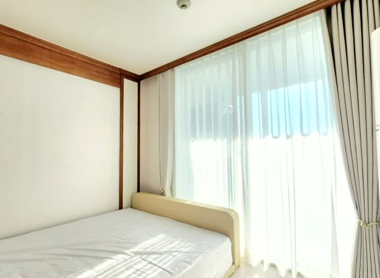
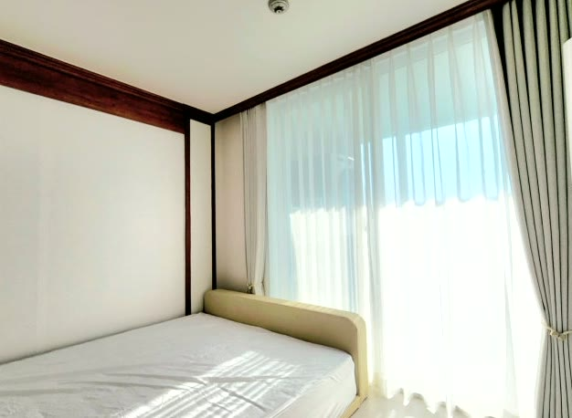
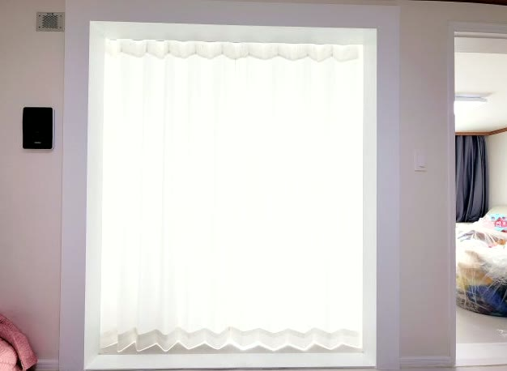
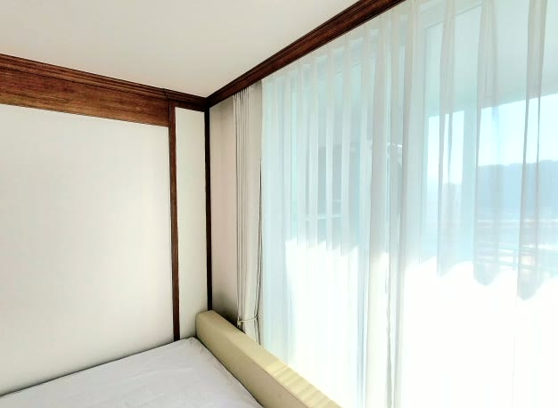

2026년 6월 24일 시공
구미 옥계동 침실
헤비쉬폰·암막 2중커튼 시공후기

구미 옥계동 빌라 침실에 다녀왔습니다.
낮에는 은은한 채광과 시선 차단을, 밤에는 확실한 암막으로 숙면을 — 두 가지를 모두 잡고 싶다는 요청이었습니다.
가서 보니 침실 큰 창에는 이 두 가지를 함께 풀 구성이 필요했습니다.
한쪽만 챙기면 다른 한쪽이 아쉬워지는 자리라, 처음부터 두 원단을 같이 쓰기로 했습니다.
큰 창은 화이트 헤비쉬폰 속커튼에 베이지 톤 암막 겉커튼을 더한 2중으로, 매립형 작은 창은 헤비쉬폰 단독으로 정리했습니다.
침실에는 왜 헤비쉬폰+암막 2중커튼인가
침실은 무엇보다 잘 쉬고 잘 자는 공간입니다.
빛을 완전히 막아 버리면 낮에도 답답하고, 얇은 속커튼만 달면 이른 아침 햇빛과 외부 시선이 그대로 들어옵니다.
그래서 헤비쉬폰 속커튼과 암막 겉커튼을 함께 다는 2중 구성이 가장 잘 맞습니다.
헤비쉬폰은 일반 쉬폰보다 도톰하고 밀도가 높습니다.
낮에 겉커튼을 열어두면 빛은 부드럽게 들이면서 바깥에서 안을 들여다보는 시선은 가려 줍니다.
은은한 채광과 프라이버시를 동시에 잡아 주는 것이 가장 큰 장점입니다.

밤에는 암막 겉커튼으로 확실하게
밤이나 숙면이 필요할 때는 암막 겉커튼을 닫아 빛을 확실히 차단합니다.
베이지 톤 암막은 어둠을 만들어 주면서도 답답하지 않습니다.
낮의 채광과 밤의 암막을 커튼 하나 여닫는 것으로 전환할 수 있어, 침실에 특히 잘 맞는 구성입니다.

매립 창은 헤비쉬폰 단독으로
안쪽으로 들어간 매립형 작은 창은 굳이 2중까지 가지 않았습니다.
헤비쉬폰 단독으로 빛과 시선을 적당히 조절하면서, 창 주변이 무겁지 않게 정리했습니다.
공간에 맞춰 구성을 달리한 부분입니다.

색은 우드 몰딩에 맞췄습니다
색은 우드 몰딩으로 마감된 차분한 침실 분위기에 맞췄습니다.
화이트 헤비쉬폰과 베이지 톤 암막을 나무 몰딩과 어우러지게 매칭했습니다.
튀는 색 대신 공간에 녹아드는 색이라, 오래 보셔도 편안합니다.
톤이 하나로 정리되어 침실이 한결 아늑해 보입니다.

2중 레일로 따로 여닫게 시공했습니다
침실 큰 창은 헤비쉬폰과 암막을 각각 다는 2중 레일로 시공했습니다.
속커튼과 겉커튼을 따로 여닫을 수 있게 한 것입니다.
주름이 일정하게 떨어지도록 폭을 넉넉히 잡고, 바닥선에 맞춰 길이를 정리해 끌리거나 뜨지 않게 마감했습니다.
매립 창은 안쪽 공간에 맞춰 레일 위치를 잡아 여닫기가 편하도록 했습니다.
관리 팁
헤비쉬폰과 암막 모두 평소에는 먼지를 가볍게 털어 주시면 됩니다.
오염이 있을 때 부분 세탁하시면 오래 깨끗하게 쓰실 수 있습니다.
암막 원단은 한쪽만 오래 직사광선에 노출되지 않도록 가끔 여닫는 위치를 바꿔 주시면 색이 더 고르게 유지됩니다.
낮의 은은한 채광과 밤의 확실한 암막, 그리고 외부 시선 차단까지 — 침실에 필요한 세 가지를 2중커튼으로 한 번에 정리해 드렸습니다.
창 사진만 채팅으로 보내주셔도 방문 전에 대략적인 견적부터 알려드립니다.
구미를 포함한 대구·경북 전 지역 가정집·아파트, 침실 커튼이 고민되시면 편하게 문의 주세요.